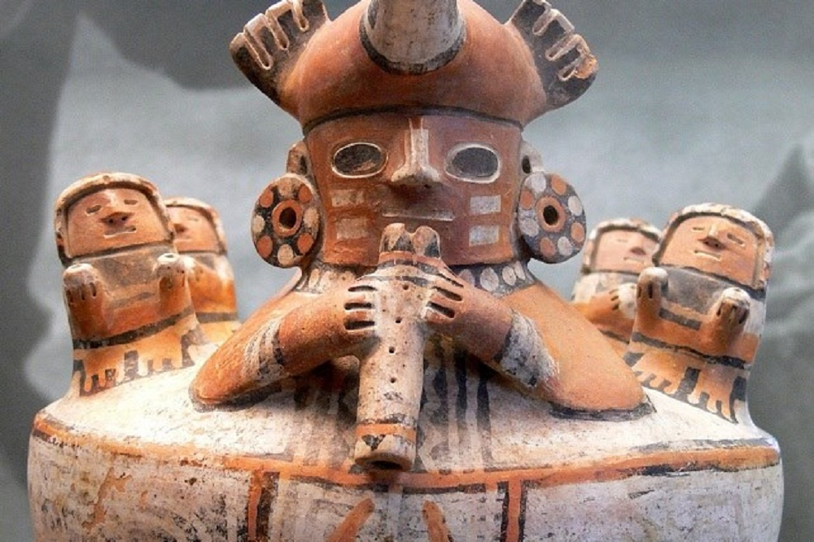

Quenista Recuay
Apunte 021
Inicio > Blog Bitácora de un músico > Apunte 021
Un bisel en arcilla cocida
En la sierra norte de Perú, la cultura Recuay se desarrolló en la región de Ancash durante el Período Intermedio Temprano, aproximadamente entre los años 200 y 600 d. C. Su tradición cerámica es especialmente conocida por sus vasijas escultóricas que representan figuras humanas, animales, edificios y escenas tridimensionales de la vida social.
Una de estas vasijas muestra una figura sentada sosteniendo una flauta vertical junto a los labios. El instrumento es tubular. El extremo superior parece tener un bisel. Ambas manos sujetan el cuerpo de la flauta.
El parecido con lo que hoy se conoce como quena es inmediato.
Sin embargo, parecido no equivale a identidad.
Lo que revela el objeto
La cerámica Recuay es escultórica, no una superficie meramente pintada. Representa cuerpos en volumen. El músico no es un glifo abstracto, sino una figura tridimensional. En varios ejemplos documentados en colecciones peruanas e internacionales, la flauta se representa claramente como un tubo recto, ligeramente cónico en algunos casos, con una muesca visible en el extremo proximal.
Esta muesca indica un sistema de insuflación de borde, no de aeroducto. La ausencia de un canal y el uso evidente de ambas manos descartan la posibilidad de que se trate de una flauta de Pan o de una trompeta. La figura no sopla a través de una superficie sin bordes. La muesca es explícita.
Esto nos indica algo preciso: durante el Período Intermedio Temprano, las flautas verticales con muesca ya eran conocidas en los Andes centrales.
Lo que no podemos determinar a partir del modelo cerámico son el diámetro interior del tubo, el grosor de las paredes, el sistema de afinación o el número exacto de orificios de digitación. La arcilla no registra el sonido, solo la postura y la forma.
La muesca como tecnología
En una flauta con muesca, el intérprete dirige un estrecho chorro de aire contra un borde afilado. Este borde divide el flujo y hace vibrar la columna de aire dentro del tubo. El sonido no proviene de una lengüeta, un conducto ni una membrana vibrante. Proviene de la inestabilidad del aire controlada en el borde.
Ese pequeño corte en el extremo superior del tubo es, por lo tanto, una característica técnica. Su forma es relevante. Una muesca puede ser redondeada, angular, poco profunda, profunda, ancha o estrecha. Cada variación afecta la respuesta del instrumento: la rapidez con la que se emite el tono, la cantidad de aire que requiere, el brillo o la opacidad del sonido y la estabilidad de la afinación bajo la boca del intérprete.
Las quenas andinas modernas muestran una amplia diversidad en la geometría del bisel. Algunas favorecen un ataque más nítido y enfocado. Otras producen un tono más suave y más aireado. Estas diferencias pertenecen al comportamiento acústico del instrumento.
La representación de Recuay no nos permite medir la muesca. No podemos conocer su ángulo, profundidad, acabado interno ni eficiencia acústica exacta. El modelo cerámico nos da una idea de las características generales, pero no de sus dimensiones funcionales. Sin embargo, la presencia de un borde de soplado con muesca indica una forma deliberada de moldear el flujo de aire.
La forma antes del nombre
Sería irresponsable afirmar que la quena moderna desciende directamente de los prototipos de Recuay (o de cualquier otra cultura prehispánica andina). Los materiales cambian. Las escalas cambian. La disposición de los orificios de digitación cambia. Los roles musicales cambian. Los nombres cambian.
Pero la semejanza estructural es difícil de ignorar: orientación vertical, cuerpo tubular, borde de soplo con muesca y posición de ejecución a dos manos.
Estas características no pertenecen al período colonial. Son anteriores en muchos siglos a la llegada de los europeos. Cualesquiera que sean las transformaciones posteriores que moldearon la quena moderna, el principio básico de la flauta vertical con muesca ya estaba presente en los Andes centrales.
La cerámica de Recuay no prueba un linaje ininterrumpido. Pero sí prueba que la forma ya existía.
La figura también nos recuerda que no se trataba solo de una forma técnica. La flauta se muestra con cuerpo, postura y presencia social. La cerámica no nos dice qué significaba la interpretación. Nos dice que tocar la flauta era algo lo suficientemente importante y visible como para ser representable en barro.
Lo que la arcilla se niega a decir
Desconocemos el repertorio. Desconocemos la afinación. Desconocemos si la flauta acompañaba rituales, cortejos, curaciones, ceremonias políticas, música doméstica o algún contexto que no se ajusta a ninguna de estas categorías. La figura cerámica no nos permite acceder a la situación de interpretación, la función social, la organización melódica ni la calidad del sonido. Captura un gesto, no un evento.
Por ello, debemos resistir la tentación de proyectar el repertorio andino moderno hacia el Período Intermedio Temprano. El parecido con una quena es importante, pero no autoriza un retorno directo del presente al pasado. El objeto permite la comparación, no la reconstrucción.
Lo que ofrece es más modesto, pero igualmente significativo: morfología, postura y representación. Muestra una flauta vertical con muesca en posición de ejecución, representada en una tradición cerámica que otorgaba forma duradera a cuerpos, objetos y roles sociales. Esto basta para establecer la profundidad arqueológica de la tradición andina de la flauta de muesca sin pretender una reconstrucción absoluta.
Antes de que el violín llegara a los Andes, antes de que el arpa transformara la acústica de las plazas y antes de que las categorías coloniales rebautizaran el sonido indígena, las flautas verticales con muesca ya estaban representadas en arcilla cocida. El sonido se ha perdido, pero la forma permanece.
Lecturas
- Bolaños, César. Origen de la música en los Andes: instrumentos musicales, objetos sonoros y músicos de la región andina precolonial. Lima: Fondo Editorial del Congreso del Perú, 2007.
- d’Harcourt, Raoul, and Marguerite d’Harcourt. La musique des Incas et ses survivances. Paris: Librairie Orientaliste Paul Geuthner, 1925.
- Izikowitz, Karl Gustav. Musical and Other Sound Instruments of the South American Indians: A Comparative Ethnographical Study. Göteborg: Elanders Boktryckeri Aktiebolag, 1935.
- Lau, George F. Andean Expressions: Art and Archaeology of the Recuay Culture. Iowa City: University of Iowa Press, 2011.